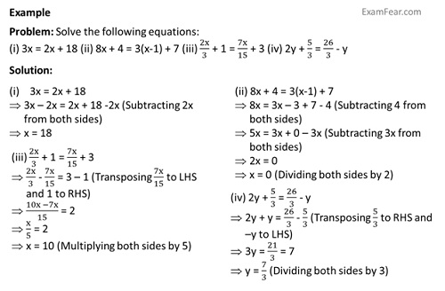
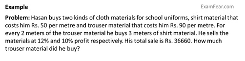
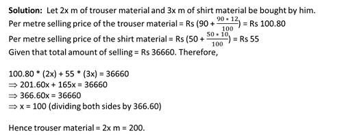

Solving Equations having variables on both sides
The equations having variables in both sides are solved similar to the above.
Example, an equation is 2x - 3 = x + 2
Adding 3 both sides, 2x - 3 + 3 = x + 2 + 3 or 2x = x + 5
Subtracting x from both sides, 2x - x = x + 5 - x or x = 5

